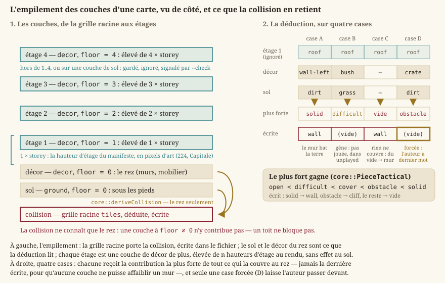

Niveaux : modèle, couches, entités, chargement
Une carte (un « niveau », dans le vocabulaire du code) est une grille de tuiles typées plus des métadonnées : un nom, une entrée, des couches visibles, des entités et des pièces assignées par case. Le modèle en mémoire, son chargement et son écriture vivent dans Source/Core/Levels ; ce qui fait vivre une carte — l'exploration, le passage d'une carte à l'autre — vit dans Source/Core/World.
Le modèle en mémoire
Deux systèmes de coordonnées à ne pas confondre
Le moteur manipule deux représentations de position différentes, et les confondre est une source d'erreurs fréquente :
core::GridPosition: une paire d'entiers(column, row)— désigne une case de la grille, sans unité de mesure continue. C'est ce que manipule tout ce qui parle de la carte comme d'un plateau discret (entrée, position d'une entité, pièce assignée).- une position continue, en flottants :
core::CellPointpour le héros de l'exploration ({1.5, 2.5}est le centre de la case(1, 2)),core::Vector2(Mathématiques du moteur) ailleurs.
Comme une tuile = 1 unité, convertir l'un vers l'autre est une simple conversion de type (core::cellOf, core::cellCenter) — mais les deux ne sont jamais interchangeables dans le code : une case n'a pas de position « à mi-chemin », un personnage si.
core::TileType : le vocabulaire des cases
Chaque case de la grille a l'un de ces douze types :
| Type | Rôle |
|---|---|
Empty | Case traversable, par défaut (aucun contenu). |
Solid | Matière générique, bloquante. |
Entry | Point d'arrivée par défaut du héros sur la carte. |
Grass, Dirt, Sand | Sols traversables : herbe, terre battue, sable. |
Water | Eau peu profonde : traversable — on y patauge. |
DeepWater | Eau profonde : bloquante tant qu'aucune règle de nage n'existe. |
Wall | Mur : la matière pleine bâtie, distincte de Solid pour pouvoir être vêtue autrement. |
Cliff | Falaise : l'obstacle naturel du décor extérieur. |
Bridge | Pont : franchit l'eau ou un ravin. Traversable. |
Stairs | Escalier : traversable. Ce qu'il relie est une donnée du graphe de cartes, jamais du type. |
core::isSolid(TileType) est la seule définition de ce qui bloque : Solid, Wall, Cliff et DeepWater. Le jour où une règle de nage existera, c'est là, et seulement là, que DeepWater changera de camp.
Ce qui agit sur une carte — PNJ, coffres, portails, rencontres — n'est pas un type de tuile mais une entité (voir plus bas) : une grille ne retient qu'un type par case, sans métadonnée.
core::TileMap : la grille
core::TileMap est une grille dense width × height de TileType, origine haut-gauche (même convention que tout le moteur, Mathématiques du moteur). Elle expose tile(colonne, ligne) (lecture), setTile, inBounds et isSolid(colonne, ligne). C'est une donnée pure, sans dépendance à un fichier ou à un rendu — testable isolément.
core::Level : la carte assemblée
core::Level se construit à partir d'un agrégat nommé, core::LevelData (C++20 designated initializers), et regroupe :
- un nom et une
TileMap— la grille de collision, celle qui porte aussi l'entrée ; - des couches (
core::TileLayer,LOT-04) dans leur ordre de superposition ; - des entités (
core::MapEntity) ; - l'entrée (
GridPosition, relecture de la caseEntry) ; - des pièces assignées par case (
core::TileTextureOverride,EX-EDIT-043) : le nom d'une pièce de la planche du lieu, dessinée sur cette case à la place de celle que la table d'apparence de son type choisirait.
C'est l'objet que le chargeur produit et que le reste du moteur (exploration, combat, rendu) consomme en lecture seule : un Level n'a aucun mutateur. L'édition passe par un type distinct, core::LevelDraft (Éditeur de niveaux).
Couches : ce qu'on voit n'est pas ce qui bloque
Un RPG en vue de dessus a besoin de séparer l'image de la règle : un tapis se traverse, un tonneau non, et les deux peuvent reposer sur la même dalle. core::LayerKind distingue donc :
Ground— ce qu'on voit sous les pieds ;Decor— dessiné au-dessus du sol ;Collision— le masque, indépendant du visuel ;Legacy— la grille unique d'une carte qui ne déclare aucune couche : elle vaut alors à la fois image et collision.
Il n'existe jamais deux grilles de collision à tenir d'accord (EX-LVL-016) : la collision d'une carte est sa TileMap racine, promue par le chargeur en couche de tête (Collision si la carte déclare des couches visibles, Legacy sinon). Un consommateur boucle donc sur layers() sans cas particulier. core::isVisualLayerTileType dit ce qui se peint sur une couche visuelle : tout le terrain, mais pas l'Entry, qui porte une règle et n'a de sens que dans la grille de collision. core::layerKindName donne le nom JSON d'un rôle (ground, decor, collision, legacy) ; il est déclaré dans TileLayer.h et non dans le chargeur ou l'écrivain parce que les deux en ont besoin, et qu'un rôle nommé différemment de part et d'autre casserait l'aller-retour sans qu'aucun test ne le voie.


Toutes les couches d'une carte partagent ses dimensions — le chargeur le vérifie, une couche décalée d'une case rendrait la collision incohérente avec ce qui est affiché. Redimensionner une carte passe donc par core::resizedLayer(layer, width, height), qui recopie types, pièces et hauteurs d'une couche aux nouvelles dimensions, tronqués aux bords : l'éditeur l'applique à toutes les couches d'un coup, et aucune ne peut rester à l'ancienne taille.
La collision se déduit : core::deriveCollision (v4)
Jusqu'à la v3, cette grille racine se peignait à part, et rien ne la tenait d'accord avec les pièces posées : un mur dessiné pouvait se traverser, et le défaut ne se voyait qu'en jouant. Depuis le LOT-EDITOR-12, elle se déduit de ce que la carte montre (EX-LVL-020), puis s'écrit dans le fichier — si bien que le jeu continue de la lire sans avoir besoin du manifeste des pièces.
core::deriveCollision(layers, width, height, manifest) donne à chaque case la contribution la plus forte parmi :
- chaque pièce nommée par une couche visuelle dont l'emprise couvre la case (
core::footprintCells) : son type tactique, lu au manifeste du lieu ; - chaque case de couche visuelle sans pièce — ou dont la pièce est inconnue du manifeste — mais d'un type non vide : la règle du type,
core::tacticalOfTileType— mur, matière pleine, arbre, colonne, toit et gradin arrêtent la vue ; eau profonde, falaise, rocher, palissade, étal, caisse, fosse et lave arrêtent le pas ; boue, gravats et buisson gênent ; le muret abrite ; tout le reste passe ; - une case que rien ne couvre, sur aucune couche : du vide, qui arrête la vue. On ne se tient pas là où il n'y a pas de sol.
« La plus forte » se lit dans l'ordre de core::PieceTactical : open < difficult < cover < obstacle < solid. Chaque contribution ne peut que monter la valeur d'une case, jamais la descendre — la plus forte, et non la dernière écrite : l'ordre des couches ne doit pas pouvoir affaiblir une collision. Un tapis posé par-dessus un mur ne le rend pas franchissable, et une pièce inconnue du manifeste compte au moins pour « ouvert » : elle couvre la case, qui n'est plus du vide. Le vocabulaire de sortie est celui que le jeu lit déjà, par core::collisionTileOf : solid s'écrit wall, obstacle s'écrit cliff, tout le reste s'écrit vide — la gêne et l'abri n'ont pas encore de règle qui les joue depuis une pièce.
L'emprise d'une pièce plus grande qu'une case est un core::PieceFootprint (columns × rows, au moins 1 × 1, PieceFootprint.h), déclaré par le manifeste du lieu et lu à un seul endroit. Une pièce est ancrée sur la case que la carte lui donne et s'étend vers les indices croissants ; core::footprintCells énumère ses cases, ligne par ligne, et core::footprintFootCorner donne le coin (colonne + columns, ligne + rows), celui dont la projection est le pied de la pièce — la composition trie une pièce large à ce pied pour qu'elle reste derrière tout ce qui se tient devant n'importe laquelle de ses cases. Une emprise qui déborde de la carte n'y occupe que ce qui y tient.
Le résultat est un core::CollisionDerivation, qui ne porte pas que la grille : il relève aussi ce qu'il a rencontré sans pouvoir le jouer — unplayed, les cases dont la contribution la plus forte est une gêne ou un abri (déduits vides, faute de règle qui les joue encore), et unknownPieces, les cases nommant une pièce que le manifeste ne connaît pas. Ces relevés sont ce que LevelEditor --check rapporte : la déduction ne se tait pas sur ce qu'elle a dû ignorer.
L'entrée n'est pas déduite — c'est un repère posé dans la grille, que l'appelant replace après coup.
Les cases forcées : l'auteur garde le dernier mot
Une déduction qui ne se corrige pas serait une camisole. La carte porte donc une liste forced (core::Level::forcedCollision) : les cases où l'auteur s'écarte sciemment de la règle. Une case forcée passe devant la déduction : sa valeur écrite fait foi, quelle que soit la contribution la plus forte des couches. LevelEditor --check vérifie que le fichier égale la déduction, cases forcées mises à part — et c'est exactement la propriété utile : tout écart est soit délibéré et listé, soit un défaut signalé ; une case forcée qui s'accorde avec la déduction est signalée aussi, puisqu'elle n'a plus besoin de l'être.
« Égaler » ne veut pas dire « même type ». core::collisionAgrees(written, derived, colonne, ligne) compare ce que les deux grilles opposent, par core::canonicalCollisionTile : la valeur canonique d'un type est wall, cliff ou vide (core::collisionTileOf(core::tacticalOfTileType(type))). Une case dirt écrite s'accorde donc avec une case vide déduite — la v3 écrivait l'une pour l'autre —, un solid écrit avec un wall déduit, et l'entry compte pour une case vide. Sans cette canonisation, migrer une carte v3 aurait déclaré des milliers de faux écarts.
Les étages : une couche de décor élevée
Un bâtiment ne se pose pas d'un bloc : un étage de mur se monte sur le rez, une toiture coiffe le dernier étage, et un îlot de manoirs a une longueur quelconque. Depuis le LOT-129 (EX-LVL-025), une couche de décor dont le champ core::TileLayer::floor vaut n, de 1 à core::MAX_STOREY_FLOOR (4), est un étage : ses pièces se dessinent élevées de n hauteurs d'étage, au-dessus du rez de leur case. La hauteur d'un étage est une donnée du lieu, pas du code : le manifeste de la scène la déclare en pixels d'art, sous la clé "storey", comme il déclare déjà son losange "tile". Le kit de la Capitale (manifest.json) dit "storey": 224 : la hauteur de ses murs au-dessus du sommet de leur case, si bien qu'un mur posé à l'étage 1 prolonge celui du rez sans décalage réglé pièce par pièce.
Le format ne connaît qu'un entier par couche ; c'est le lecteur qui décide ce qu'il joue. Un floor sur une couche de sol, ou hors de 0 à 4 sur une couche de décor, est gardé par le chargeur et l'écrivain (l'aller-retour ne perd rien), ignoré par la composition et la déduction de collision, et signalé par LevelEditor --check (only a decor layer rises, from floor 1 to 4; ignored). Dans l'éditeur, core::LevelDraft::setLayerFloor(index, floor) est le seul chemin pour changer l'étage d'une couche : il refuse une couche qui n'est pas de décor et un étage hors bornes, et redéduit la collision de toute la carte, parce qu'une couche qui monte à l'étage cesse d'y contribuer.
Car c'est la règle à retenir : l'étage ne compte pas dans la collision. core::deriveCollision ne lit que les couches visuelles à floor == 0 — un étage de mur ou un toit se tient au-dessus du rez, et c'est le rez qui dit si l'on passe. Un personnage ne monte pas encore à l'étage : les terrasses et remparts praticables relèvent de l'elevation par case, toujours réservée (EX-LVL-024). Ce que l'étage change au rendu — l'élévation, le rang de tri, l'effacement d'un toit qui masque le héros — est décrit dans Rendu 2D : de la scène à l'écran.
Entités et propriétés libres
core::MapEntity est ce qui n'est pas une tuile : un type libre ("npc", "chest", "portal", "encounter"…), une case, et des propriétés libres (core::PropertyMap, EX-LVL-017/EX-LVL-018). Core/Levels ne connaît aucune sémantique de type : c'est le gameplay qui l'interprète, et les familles que l'éditeur sait poser sont rassemblées dans core::knownEntityKinds (Source/Core/World/EntityKinds.h). Une entité de type inconnu est une erreur de conception tolérée, pas une carte invalide (EX-NFR-040).
L'identifiant d'une entité s'écrit e<numéro> : core::entityIdFor(number) le forme, et core::entityIdNumber(id) le relit (std::nullopt pour un identifiant d'une autre forme, qu'une carte écrite à la main peut porter). C'est ce couple que LevelEditor --check emploie pour vérifier qu'aucun numéro n'atteint nextEntityId — sans quoi l'éditeur pourrait redonner un identifiant déjà pris.
core::PropertyMap est un std::map (ordonné, pour une écriture déterministe) de valeurs bool, entier, réel ou chaîne. C'est aussi là que le chargeur range toute clé qu'il ne reconnaît pas dans une couche ou une entité, et que l'écrivain la réémet : un fichier produit par une version ultérieure de l'éditeur traverse une version antérieure sans rien perdre. La propriété de couche scene, par exemple, nomme le lieu dont la carte porte les pièces : un chemin de l'arbre des lieux (central-empire/capital/martpart), dont les planches viennent de Assets/Regions/…/Scene/ et des niveaux communs du lieu (LOT-124) ; Assets/Scene/<lieu>/ ne survit que pour les racines d'essai.
Chargement JSON
Une carte est décrite dans un fichier texte au format JSON ⧉, parsé par la bibliothèque nlohmann/json, dont l'usage est confiné aux fichiers .cpp du chargeur et de l'écrivain — le reste du moteur ne dépend jamais directement de cette bibliothèque. La classe core::LevelLoader expose deux points d'entrée statiques : loadFromFile (depuis un chemin) et loadFromString (depuis du texte déjà en mémoire, pratique pour les tests). core::LevelWriter en est le symétrique (toJsonString, saveToFile, buildJson).
Exemple concret
{
"version": 4,
"name": "map.village.name",
"width": 12,
"height": 8,
"nextEntityId": 13,
"properties": { "region": "central-empire" },
"tiles": [
{ "x": 1, "y": 1, "type": "entry" },
{ "x": 4, "y": 4, "type": "wall" }
],
"forced": [ { "x": 9, "y": 7 } ],
"layers": [
{ "name": "sol", "kind": "ground", "scene": "village",
"tiles": [{ "x": 4, "y": 4, "type": "dirt", "piece": "chemin" }] },
{ "name": "relief", "kind": "decor",
"tiles": [{ "x": 4, "y": 4, "type": "wall", "piece": "puits" }] }
],
"entities": [
{ "id": "e7", "type": "npc", "x": 6, "y": 3, "dialogue": "bonjour" }
]
}(exemple illustratif, repris de niveaux.md — les cartes réelles sont dans Source/Elements/Levels/, par exemple central-empire/capital/martpart.json). À lire ainsi :
versionest le numéro de format (core::LEVEL_FORMAT_VERSION, aujourd'hui4,EX-LVL-005) ; un fichier sans ce champ se lit comme la version initiale, un fichier d'une version supérieure est refusé plutôt que lu au mieux ;nameest une clé de traduction (map.<id>.name), pas un libellé : un nom de carte s'affiche au joueur, et passe donc par le catalogue comme tout autre texte ;width,heightdonnent les dimensions de la grille ;tilesest la collision, en liste éparse : seules les cases non vides sont listées, chacune par ses coordonnéesx/y(colonne/ligne) et sontype. Une case absente est implicitementEmpty. C'est ce tableau que la déduction produit, et que le jeu lit tel quel. Le nom d'un type ("wall","dirt"…) est celui que rendcore::tileTypeName, etcore::parseTileTypeen est l'inverse exact (TileTypeName.h) : une seule table pour l'écrivain, le chargeur et les messages, sans quoi un type ajouté d'un côté ne se relirait pas de l'autre ; un nom inconnu est une donnée invalide à signaler, jamais un type deviné ;forcedliste les cases où l'auteur s'est écarté de la déduction ;layersporte les couches visibles ; chaque case y porte sontypeet, facultativement, sapiece. En v3, l'assignation s'écrivait"texture"sur la grille racine : elle est lue dans une carte v3 et rangée comme pièce de la couche de décor, mais refusée dans une v4 — deux façons d'écrire la même chose est exactement ce qu'un numéro de version sert à supprimer ;entitiesporte les entités, chacune avec unidunique dans la carte (nextEntityIddonne le prochain libre). L'identifiant existe pour qu'on puisse désigner une entité — la citer depuis une quête, la renommer, la remplacer — sans dépendre de sa position, qui bouge ;propertiessont les propriétés libres de la carte elle-même (région, ambiance) ;layers,entities,forcedetpropertiessont optionnels : une carte sans couche garde sa grille unique, promueLegacy, et ressort de l'écrivain telle qu'elle est entrée.
Validation
Le chargement valide le contenu (EX-LVL-004) avant de produire un Level utilisable : dimensions strictement positives et bornées par core::MAX_LEVEL_SIDE (1024 cases de côté, LevelLoader.h), tuiles toutes dans les bornes de la grille, aucune case dupliquée, type de tuile connu, couches aux dimensions de la carte, pas de couche collision déclarée, exactement une tuile Entry (une carte sans entrée, ou avec deux, est une erreur de contenu, pas une situation ambiguë à tolérer), aucun id d'entité en double, et, pour une variante, une base qui existe et n'est pas elle-même une variante.
La borne sur le côté ne sert à rien en usage normal — l'éditeur plafonne ses cartes à 100 cases de côté, dix fois moins. Elle existe parce que la grille est allouée dense dès que width et height sont lus : un fichier qui déclare cent mille cases de côté réclame des gigaoctets avant même que la première tuile soit examinée, et c'est exactement ce que le fuzzing nocturne du chargeur (fuzz_level) a fini par produire — une carte de dix gigaoctets, tuée par manque de mémoire. Refuser un fichier aberrant avant d'allouer sa grille est la seule réponse qui reste récupérable (EX-NFR-040).
En cas d'échec — JSON malformé, champ manquant, type de tuile inconnu, échec d'une des validations ci-dessus — le chargeur ne lève jamais d'exception vers l'appelant (EX-NFR-040) : il renvoie un core::LevelLoadResult, { optional<Level> level, std::string error, LevelValidationError errorCode }. ok() indique le succès ; en cas d'échec, level est vide, error décrit le problème de façon exploitable et errorCode le catégorise (ParseError, InvalidEntryCount, UnsupportedFormatVersion…), pour qu'un appelant ne dépende jamais du texte exact du message. Ce choix — résultat récupérable plutôt qu'exception — garde la gestion d'erreur explicite à chaque site d'appel, cohérent avec le reste du moteur qui ne s'appuie pas sur les exceptions pour son flux de contrôle normal.
Variantes, hauteur réservée, écriture canonique
Quatre ajouts de la v4 méritent d'être connus, ne serait-ce que pour ne pas s'étonner de les rencontrer :
- Variante (
LevelVariant.h,EX-LVL-023) — une carte peut déclarer unebaseet n'écrire que ses écarts : sa planche (scene) et ses propres entités, aucune case. Une place de marché le jour et la nuit sont la même carte à deux habillages : les dupliquer, c'est prendre le risque d'en corriger une seule. Au chargement,core::findVariantBase(variantPath, baseId)cherche<dossier>/<baseId>.jsondu dossier de la variante vers la racine, etcore::applyVariant(base, variant)rend la carte jouée : les cases, couches, collision et entrée de la base, les entités et le nom de la variante, sa planche si elle en change. La carte rendue gardebaseetscene, si bien que l'écrivain la réécrit en variante, sans ses cases. Une variante ne peut pas avoir pour base une autre variante — une chaîne de différences ne se relit plus. - Étages —
floorpar couche de décor (EX-LVL-025,LOT-129), décrits plus haut : les murs du rez sur la couche de décor à l'étage 0, un étage de mur sur une couche à l'étage 1, le toit sur une couche au-dessus ; la collision ne lit que le rez. - Hauteur par case réservée —
elevationpar case et par entité. Les champs sont lus, écrits et préservés, mais aucune règle ne les joue (EX-LVL-024) : un personnage ne monte pas encore sur une terrasse ou un rempart. - Écriture canonique (
core::LevelWriter,EX-LVL-005) — charger puis réenregistrer une carte intacte rend le même fichier, octet pour octet : champs dans un ordre fixe, une case par ligne. Sans cela, chaque ouverture dans l'éditeur produirait un diff, et une revue de carte deviendrait illisible.
Qui lit la carte
Le Level n'est, en lui-même, qu'une donnée : il ne bouge pas et ne s'affiche pas. core::ExplorationSession (Source/Core/World) le fait vivre — un héros qui marche, parle à ce qu'il regarde et franchit les portails —, et core::WorldTravel sert les cartes du dossier des niveaux (<dossier>/<identifiant>.json) quand un portail en désigne une autre.
Point important : la TileMap racine reste la source de vérité de tout ce qui touche à la collision. L'exploration interroge directement isSolid(colonne, ligne) sur tileMap(), jamais une couche visuelle ni ce que le rendu en a tiré.
Attention toutefois à ne pas en tirer la conclusion d'avant la v4. Repeindre le sol change désormais ce qui bloque, puisque la collision se déduit des pièces posées — mais le changement passe par l'éditeur, qui redéduit et réécrit la grille racine. Au chargement, la grille lue fait toujours foi, et le jeu n'a jamais à déduire quoi que ce soit. C'est la distinction à garder : la déduction est un geste d'édition, la lecture reste un simple accès.
Voir aussi
core::Level,core::LevelData,core::TileMap,core::TileType,core::TileLayer,core::MapEntity,core::PropertyMap,core::TileTextureOverride,core::tileTypeName,core::parseTileType,core::layerKindName,core::resizedLayer,core::entityIdFor,core::entityIdNumber.core::deriveCollision,core::CollisionDerivation,core::tacticalOfTileType,core::collisionTileOf,core::canonicalCollisionTile,core::collisionAgrees,core::PieceFootprint,core::footprintCells,core::footprintFootCorner,core::MAX_STOREY_FLOOR— la collision déduite, les emprises et les étages.core::LevelLoader,core::LevelLoadResult,core::LevelWriter,core::MAX_LEVEL_SIDE,core::applyVariant,core::findVariantBase.core::ExplorationSession,core::WorldTravel,core::knownEntityKinds.- Éditeur de niveaux — le brouillon mutable, qui repasse par ce chargeur pour valider.
- Écrans, navigation et boucle de jeu — les écrans du jeu qui mettent une carte à l'écran.
niveaux.md— le format de carte et ses exigences.